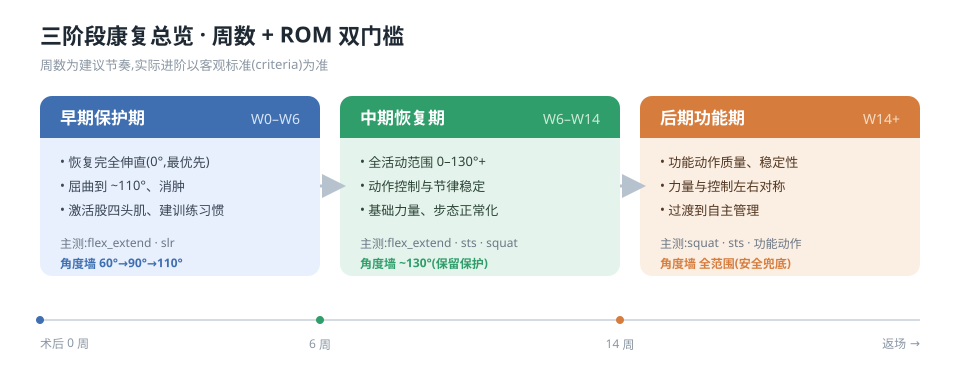
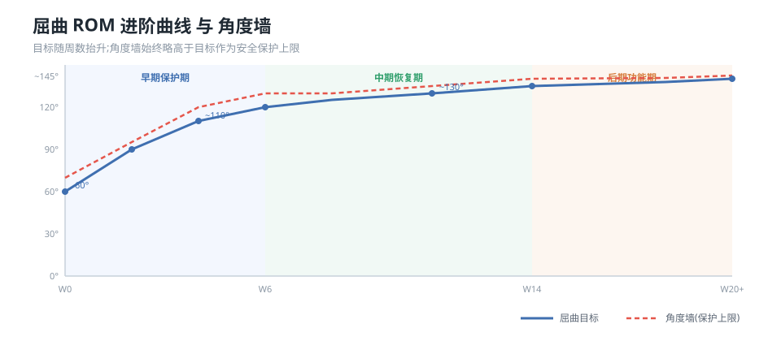
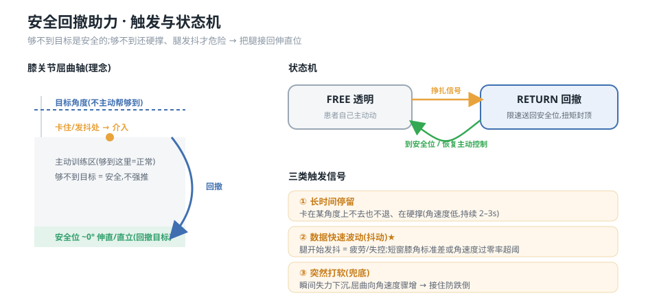
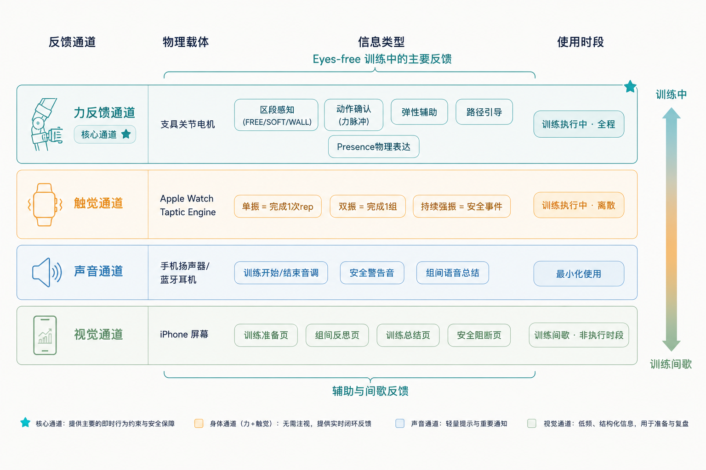

家庭康复最稳定的失败不是动作做错，而是无人见证下的放弃。我们把康复组织成一套三阶段、可解释、会陪你走完的训练系统——并用被试内实验检验它是否真的有效。
以客观标准（criteria）而非单纯周数驱动进阶。每个阶段定义不同的目标、限制与反馈密度，系统的每一层都被阶段引导。


屈曲 ROM 目标按阶段逐步提高，硬件角度墙始终略高于当日目标作为安全冗余。患者总能感到「再多一点点」的挑战，但永远撞不穿那堵保护墙。

软回退仅本次降目标、不留痕迹，语气是「今天我们走慢一点」；硬回退进入阶段轨迹，但必须附带返回路径承诺——「做 A，连续 N 次稳定后回到 B」。疼痛跨阈值即单次触发，其余指标需累积。
力 · 触觉 · 声音 · 视觉，不是平等并列，而是按事件性质分工：安全冗余 vs. 学习差异化。

贯穿所有具体设计。系统传达「被看到」，但绝不假装关心。
基于设计探针方法的被试内实验（N=10，三条件、拉丁方平衡），从身体觉知、系统关系、陪伴感知三个维度检验交互范式。